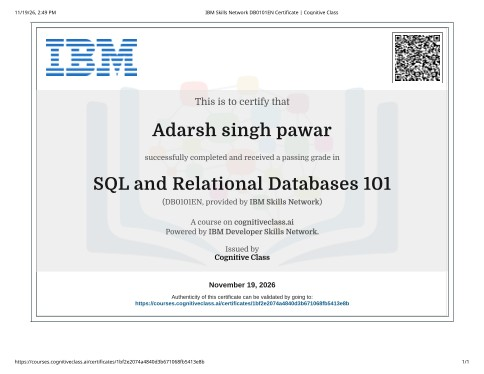
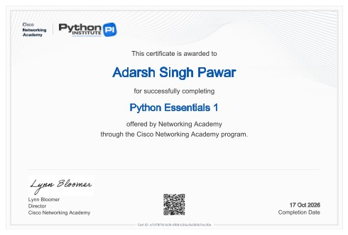
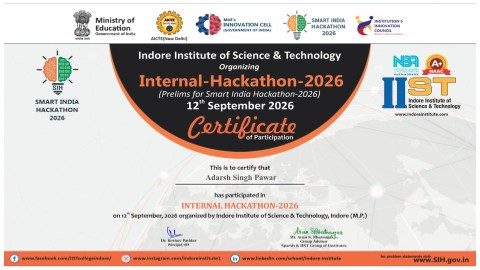
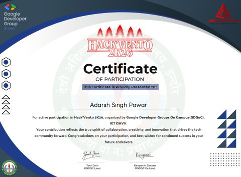
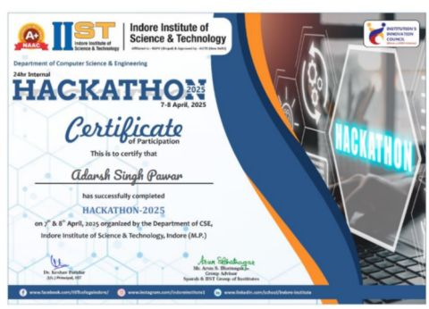
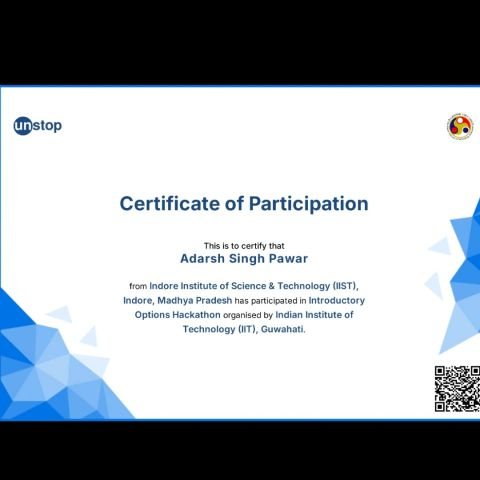

AI × SUSTAINABILITYShare
Plate
Plate
● CSE STUDENT · GRADUATING 2028
Aspiring Software Developer · Programmer
Computer Science Engineering student in Indore, learning programming, building practical ideas and solving meaningful problems with technology.
Explore my work ↘01 / ABOUT
I am a Computer Science and Engineering student at Indore Institute of Science and Technology, Indore (RGPV). I am focused on programming, software development, continuous learning and GATE CSE 2028 preparation.
02 / PROJECTS & IDEAS
HTML, CSS, JavaScript and Node.js API exploration.
Timetables, events, routes and student information.
JavaScript experiments including Ping Pong and task tracking.
03 / CREDENTIALS & HACKATHONS
Priority order follows certificate date. Records with no printed date are listed separately and accurately.

IBM Skills Network / Cognitive Class
Cisco Networking Academy

17 OCT 2026 · PRIORITY 03Cisco Networking Academy

Participation · IIST

Participation · GDGoC IET DAVV

Participation · Department of CSE, IIST

Participation · IIST & IIT Guwahati
04 / EDUCATION
Indore Institute of Science and Technology, Indore · RGPV
Divya Convent School
Little Flower Higher Secondary School
05 / CONTACT
+91 93017 51765